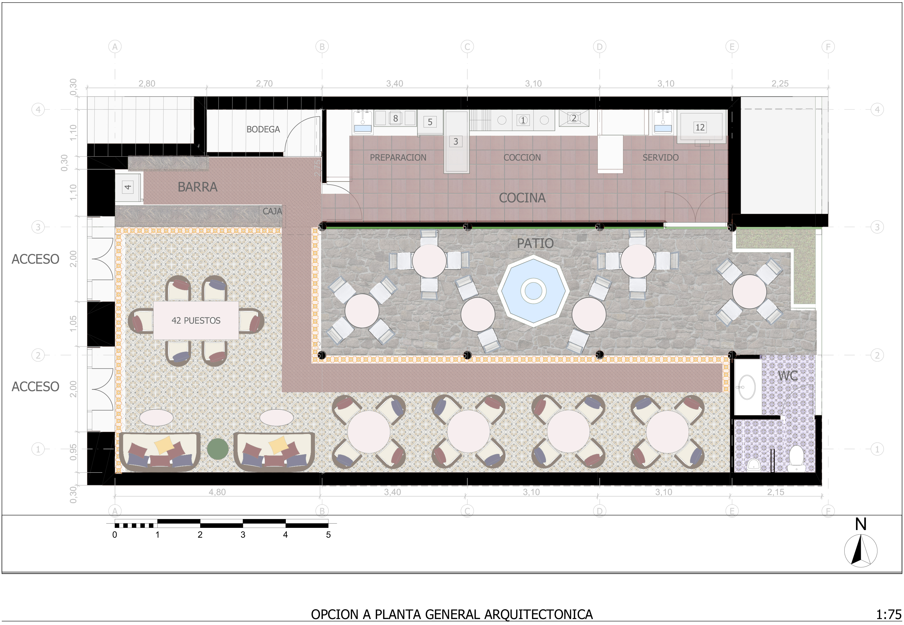
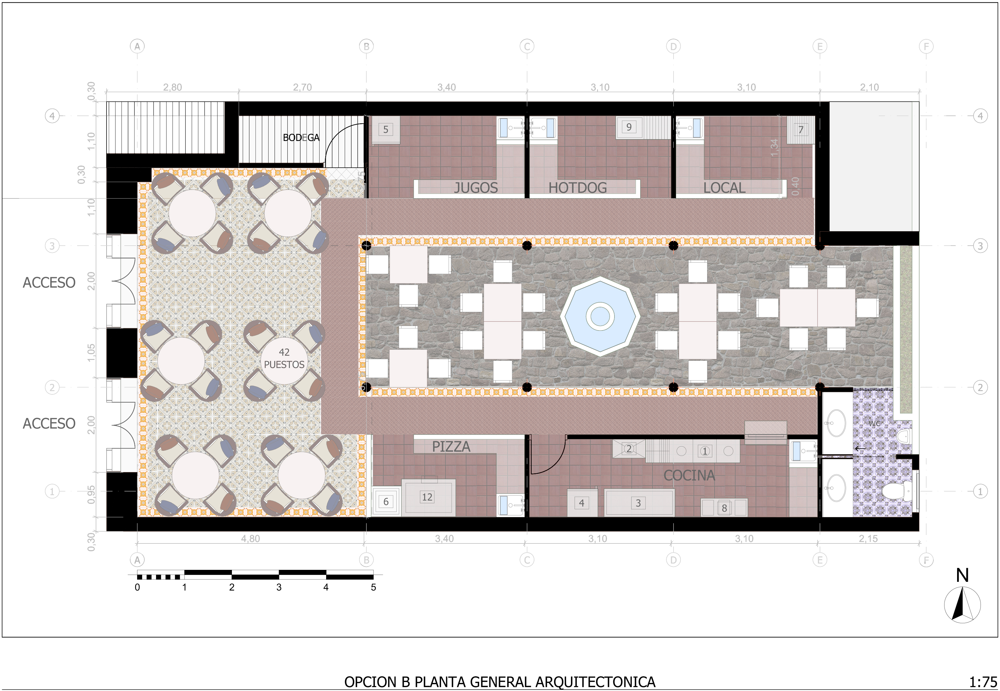

Arquitectura Comercial & Educativa · Colombia
Un restaurante con dos propuestas de programa y una institución educativa con nueva fachada — dos proyectos de escala cotidiana donde el diseño mejora la experiencia de quienes los usan.
Diseño interior de un restaurante organizado en torno a un patio central de piedra con fuente octogonal. El proyecto presenta dos opciones de programa: la Opción A con cocina abierta tipo barra y 42 puestos, y la Opción B con locales de comida rápida diferenciados —jugos, hotdog, pizza— manteniendo el mismo patio como elemento articulador. Las plantas muestran el trabajo de detalle en pavimentos, materiales y circulaciones.


Renovación de fachada de una institución educativa en Colombia. El proyecto propone una intervención cromática y compositiva que moderniza la imagen del colegio sin alterar su estructura: columnas en amarillo vibrante, franjas de color institucional azul y amarillo, lockers en azul que ordenan los corredores y vegetación que suaviza el límite entre la calle y el edificio.